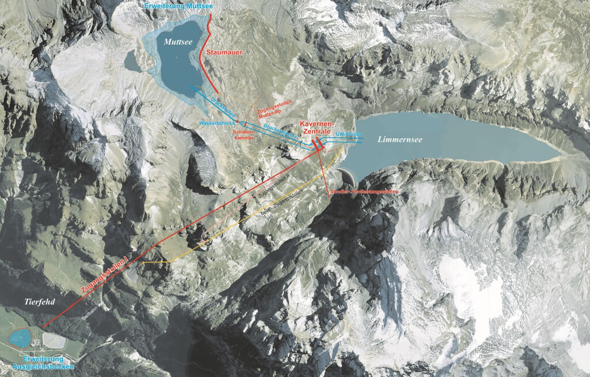
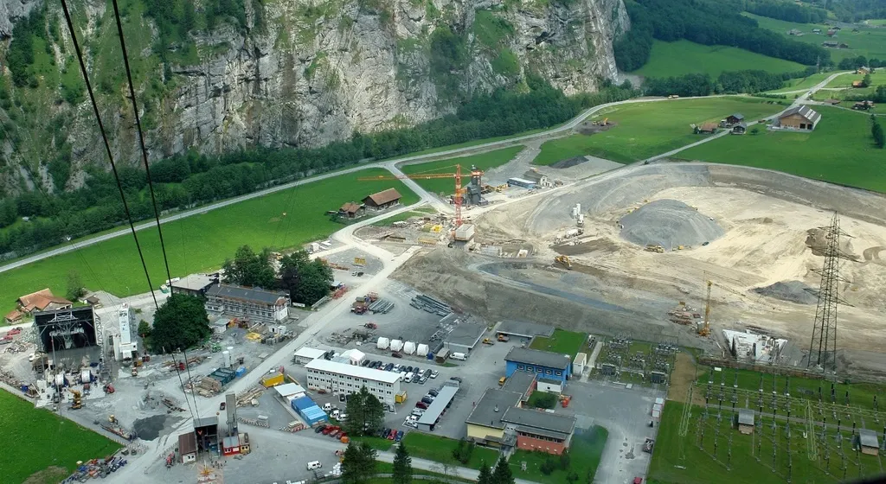

Hydro Electric Pump Storage Plant Linth-Limmern.
Claim and Contract Manager General Contractor side

- Period
- 2013-2014
- Project costs
- CHF 2.1 billion
- Client
- Kraftwerke Linth-Limmern, Switzerland
- Location
- Tierfehd, Switzerland
The project
The Limmern pumped storage plant (HEPSP) is one of the significant expansion projects in recent years. The planning and construction period for the plant took around ten years. With a capacity of 1000 MW, the HEPSP is a huge battery in the Glarus Alps.
The new HEPSP, which is built underground in the rock, can pump water from Lake Limmern back to Lake Muttsee, 630 metres higher, and use it to produce electricity again when needed.
Key facts
- Dam construction (L = 1050 m, H = 35 m)
- Machine and transformer cavern incl. access and opening tunnels
- Two inclined pressure shafts (L = 1120 m, Ø 5.2 m)
- Two underwater tunnels (L = 530 m, Ø 5.5 m)
- Upper waterway tunnel (L = 575 m, Ø 8 m) incl. vertical surge shaft (H = 130 m, Ø 11.7 m)
Challenges
The biggest challenge was the extreme location of the project. At 1054 metres, the Muttsee dam is the longest dam in Switzerland and lies at around 2500 metres above sea level. It is also the highest dam in Europe. The 250,000 m³ of concrete needed to build the record dam contrasts with the huge volume of 23 million m³ of water which the heavyweight dam on Muttenalp can hold at most.
My role in the project
Claim and Contract Manager General Contractor side, responsible for:
- Development of a supplementary claim management system for the major project Linth-Limmern
- Quality assurance and optimization of various construction processes
- Risk and opportunity management
- Complete supplementary claim management and negotiations
Images
6 images from the project, click to enlarge
